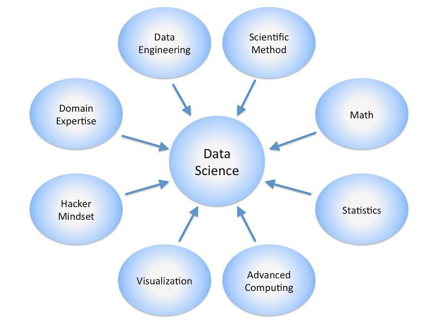

What is Data Science?
Data science is the study of data to extract meaningful insights for business. It is a multidisciplinary approach that combines principles and practices from the fields of mathematics, statistics, artificial intelligence, and computer engineering to analyze large amounts of data. This analysis helps data scientists to ask and answer questions like what happened, why it happened, what will happen, and what can be done with the results.
 What is data science used for?
Data science is used to study data in four main ways:
1. Descriptive analysis: Descriptive analysis examines data to gain insights into what happened or what is happening in the data environment. It is characterized by data visualizations such as pie charts, bar charts, line graphs, tables, or generated narratives. For example, a flight booking service may record data like the number of tickets booked each day. Descriptive analysis will reveal booking spikes, booking slumps, and high-performing months for this service.
2. Diagnostic analysis: Diagnostic analysis is a deep-dive or detailed data examination to understand why something happened. It is characterized by techniques such as drill-down, data discovery, data mining, and correlations. Multiple data operations and transformations may be performed on a given data set to discover unique patterns in each of these techniques.For example, the flight service might drill down on a particularly high-performing month to better understand the booking spike. This may lead to the discovery that many customers visit a particular city to attend a monthly sporting event.
3. Predictive analysis: Predictive analysis uses historical data to make accurate forecasts about data patterns that may occur in the future. It is characterized by techniques such as machine learning, forecasting, pattern matching, and predictive modeling. In each of these techniques, computers are trained to reverse engineer causality connections in the data.For example, the flight service team might use data science to predict flight booking patterns for the coming year at the start of each year. The computer program or algorithm may look at past data and predict booking spikes for certain destinations in May. Having anticipated their customer’s future travel requirements, the company could start targeted advertising for those cities from February.
4. Prescriptive analysis: Prescriptive analytics takes predictive data to the next level. It not only predicts what is likely to happen but also suggests an optimum response to that outcome. It can analyze the potential implications of different choices and recommend the best course of action. It uses graph analysis, simulation, complex event processing, neural networks, and recommendation engines from machine learning. What are the data science techniques? Classification: Classification is the sorting of data into specific groups or categories. Computers are trained to identify and sort data. Known data sets are used to build decision algorithms in a computer that quickly processes and categorizes the data. Regression: Regression is the method of finding a relationship between two seemingly unrelated data points. The connection is usually modeled around a mathematical formula and represented as a graph or curves. When the value of one data point is known, regression is used to predict the other data point. Clustering: Clustering is the method of grouping closely related data together to look for patterns and anomalies. Clustering is different from sorting because the data cannot be accurately classified into fixed categories. Hence the data is grouped into most likely relationships. New patterns and relationships can be discovered with clustering. Data science tools
Data scientists rely on popular programming languages to conduct exploratory data analysis and statistical regression. These open source tools support pre-built statistical modeling, machine learning, and graphics capabilities. These languages include the following:
1. R Studio: An open source programming language and environment for developing statistical computing and graphics.
2. Python: It is a dynamic and flexible programming language. The Python includes numerous libraries, such as NumPy, Pandas, Matplotlib, for analyzing data quickly.
3. SAS: A comprehensive tool suite, including visualizations and interactive dashboards, for analyzing, reporting, data mining, and predictive modeling.
4. IBM SPSS: Offers advanced statistical analysis, a large library of machine learning algorithms, text analysis, open source extensibility, integration with big data, and seamless deployment into applications. Stages of a data science project
1. Data ingestion: The lifecycle begins with the data collection-both raw structured and unstructured data from all relevant sources using a variety of methods. These methods can include manual entry, web scraping, and real-time streaming data from systems and devices. Data sources can include structured data, such as customer data, along with unstructured data like log files, video, audio, pictures, the Internet of Things (IoT), social media, and more.
2. Data storage and data processing: Since data can have different formats and structures, companies need to consider different storage systems based on the type of data that needs to be captured. Data management teams help to set standards around data storage and structure, which facilitate workflows around analytics, machine learning and deep learning models. This stage includes cleaning data, deduplicating, transforming and combining the data using ETL (extract, transform, load) jobs or other data integration technologies. This data preparation is essential for promoting data quality before loading into a data warehouse, data lake, or other repository.
3. Data analysis: Here, data scientists conduct an exploratory data analysis to examine biases, patterns, ranges, and distributions of values within the data. This data analytics exploration drives hypothesis generation for a/b testing. It also allows analysts to determine the data’s relevance for use within modeling efforts for predictive analytics, machine learning, and/or deep learning. Depending on a model’s accuracy, organizations can become reliant on these insights for business decision making, allowing them to drive more scalability.
4. Communicate: Finally, insights are presented as reports and other data visualizations that make the insights-and their impact on business-easier for business analysts and other decision-makers to understand. A data science programming language such as R or Python includes components for generating visualizations; alternately, data scientists can use dedicated visualization tools. Real-world applications
Although data science is often concerned with making sense of abstract data points, its impact can be seen concretely throughout the world today. Here are some familiar examples of data science or data science-powered services found all around us:
1. Advertising and marketing: One of the most common ways that data science is employed in marketing is when you Google a term, and algorithms create relevant search results, including targeted ads related to your query. This application of data science is why you may see an online advertisement for data science training programmes, while someone else in the same region may see an advertisement for clothes.
2. Health care: Used for medical image analysis, Genomics and genetics,Pharmaceutical research and development, Bots for health and virtual assistants.Even medical operations have benefited from data science innovations. Employing various methods and frameworks, such as MapReduce, data science is used to identify malignancies, artery stenosis, and organ demarcation. Support vector machines (SVM), content-based health care image indexing, and wavelet analysis are machine-learning approaches used to classify solid textures.
3. E-commerce: Data science has impacted e-commerce in various ways, helping businesses identify their target market, anticipate goods and services, and optimise price formations. Natural language processing (NLP) and recommendation engines, in particular, have proven highly beneficial to e-commerce companies that employ these methodologies to analyse customer purchases and gain insight into potential growth strategies. Furthermore, NLP is used to analyse texts and online surveys, which helps businesses provide quality services to their customers.
4. Transportation: While self-driving vehicles are likely the most eye-catching data science development in transportation, data scientists have also been foundational to producing fuel usage statistics, analysing driver conduct, and monitoring vehicular performance. By combining reinforcement learning with automation, car manufacturers may create smarter, safer vehicles with better logistical routes.Prominent ride-hailing apps like Ola use data science to optimise cost and completion routes by combining various elements like customer behaviour, location, economic data, and logistic providers.